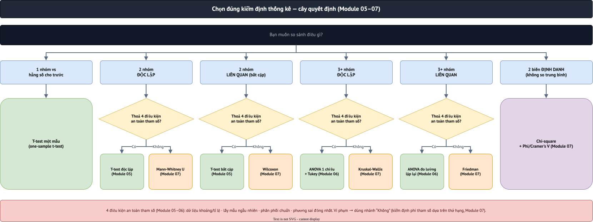

11·选择正确的统计检验——综合决策树
第11／12单元・内容依据 Cohen, Manion & Morrison 所著《Research Methods in Education》第8版（Routledge, 2018）第44章"数据分析概览"。本单元不介绍任何新技术——而是把第03-10单元已学过的方法选择逻辑，整合成一套完整的决策流程。
1. 决策树：4个问题指向正确的方法
全部8个推断统计单元（03-10）可以归纳为4个连续的问题。按顺序回答这4个问题，几乎总能得到正确的方法。
- 你的目标是什么？ 描述单个变量（第03单元）· 比较各组之间的平均值/等级（第05-07单元）· 测量2个连续变量之间的关联（第08单元）· 从其他变量预测某个变量（第09单元）· 在多个变量/对象中寻找潜在结构（第10单元）。
- 主要变量（通常是因变量）的测量尺度是什么？ 定类/顺序 → 非参数分支。等距/比率 且满足参数条件（第04单元：正态分布、方差齐性...）→ 参数分支。
- 如果是比较组：有多少组，各组是独立的还是相关的（在同一对象上测量）？ 2个独立组／2个相关组／3组以上——每种情况都有各自对应的参数和非参数检验。
- 如果是测量关联：你需要对称的（不区分哪个是因变量）还是有方向的（从X预测Y）？ 对称 → 相关。有方向，1个自变量 → 简单回归。有方向，多个自变量 → 多元回归。

2. 快速查询表——8个单元汇总于一表
| 目标 | 组数/变量数 | 参数分支 | 非参数分支 | 单元 |
|---|---|---|---|---|
| 比较2个独立组 | 2组 | 独立样本t检验 | Mann-Whitney U检验 | 05, 07 |
| 比较2个相关组（同一对象） | 2次测量 | 配对t检验 | Wilcoxon检验 | 05, 07 |
| 比较3个以上独立组 | 3组以上 | 单因素方差分析ANOVA（+Tukey） | Kruskal-Wallis检验 | 06, 07 |
| 比较3次以上相关测量 | 3次以上测量 | 重复测量方差分析 | Friedman检验 | 07 |
| 2个定类变量之间的关联 | 交叉表 | — | 卡方检验（+Cramer's V） | 07 |
| 2个连续变量之间的关联 | 2变量 | Pearson相关系数r | Spearman等级相关系数 | 08 |
| 2变量关联，控制第3变量 | 3变量 | 偏相关 | — | 08 |
| 用1个以上变量预测1个变量 | 1个因变量 | 简单/多元回归 | — | 09 |
| 从多个变量中寻找潜在概念 | 多个题项 | 因子分析（EFA） | — | 10 |
| 将特征相似的对象分组 | 多个变量 | 聚类分析（K-means） | — | 10 |
3. 练习：6个真实情境，选择正确的方法
使用第03-10单元贯穿始终出现过的研究问题——先遮住"答案"，自己先作答再核对。
情境1："A、B、C三所学校的数学平均分是否有差异？"——因变量（数学成绩）是比率量表，近似正态分布（已在第04单元检验），3个独立组。
→ 答案：单因素方差分析ANOVA（若显著则加做Tukey事后检验）——第06单元。
情境2："同一批240名学生的成绩，从前测到后测是否有提高？"——同一对象，测量2次。
→ 答案：配对t检验（若成绩满足参数条件）——第05单元。
情境3："h1评分（1-5李克特量表）在3所学校之间是否有差异？"——因变量是李克特量表（顺序量表，不是等距/比率量表），3个独立组。
→ 答案：Kruskal-Wallis检验（非参数，因为单一李克特题项是顺序数据）——第07单元。
情境4："自学时长与数学成绩是否关联，这种关联又如何用来预测新学生的数学成绩？"——既需要测量关联，又需要有方向的预测。
→ 答案：先用Pearson相关系数r（第08单元）测量关联，再用线性回归（第09单元）建立预测方程——两个步骤相辅相成，不能互相替代。
情境5："6道调查题项（h1-h3、a1-a3）是否真的测量了2个不同的心理概念（兴趣、焦虑），还是实际上只测量了1个共同概念？"——关于多个观测变量背后潜在结构的问题。
→ 答案：探索性因子分析（EFA）——第10单元。
情境6："195所PISA学校能否分成困难程度/优势程度不同的类型？"——关于对象（学校）分组的问题，而不是对变量分组。
→ 答案：K-means聚类分析——第10单元。
贯穿8个单元最常见的综合陷阱：把顺序量表（单一李克特题项）与等距/比率量表（多个李克特题项加总的分数，或考试成绩）混淆——导致选错参数/非参数分支。务必先回到第01单元确定正确的测量尺度，再选择检验方法，而不是先选好检验再"硬套"数据。
4. SPSS/PSPP实践
本单元没有新的分析——实践内容是重新运行第3节中确定的6个检验，使用第05-10单元已学过的确切语法。配套的notebook把这6个情境汇总在同一处，方便快速复习。
⬇ 下载班级数据（.csv）
⬇ 下载PISA学校数据（.csv）
⬇ PSPP语法示例（.sps）
🚀 Notebook：6个情境综合复习（Colab）
📓 Notebook：6个情境综合复习（GitHub）